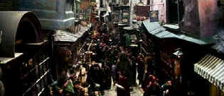

| Harry Potter and the Sorcerer's
Stone (SE)/ B+, A |
| Warner/2001/152/ANA 2.35 |
Harry Potter and the Sorcerer's Stone
conjures a glistening magical front, sparkling enough to provide amble
wonder for both children and adults. A finely tuned preamble sets up of
the world of Harry Potter with startling economy. The magical
style is a great precursor of what follows. Young Harry's adventures
appear to begin with an elegant wave of a magic movie wand.
Harry is one of the chosen born, a special group
of children destined to practice the art of wizardry. Orphaned in infancy,
Harry is delivered to the home of his aunt and uncle for what turns out to
be a Cinderella upbringing. But, on his eleventh birthday, Harry's life
turns around with a visit from the powerful wizard gamekeeper Hagrid, and
an invitation to enroll at Hogwarts School of Witchcraft and Wizardry. And
so the adventures begin.
 |
|
A magical mall through a
stone wall. ©Warner
|
The first half of the film is so brilliantly
inventive and full of discovery with breezy pacing that the second half of
the film slows down considerably. Even though it is good, it pales in
comparison. The film is long to be sure as well. It could have had a
sharper focus with less peripheral action. A more distilled concentration
would have produced a better film, perhaps not so faithful to the source
material, but more effective. The world of Harry Potter is a brilliant
creation of J. K. Rowling and Chris Columbus and his team of filmmakers
have done a wonderful job of realizing it on film.
Columbus directs with great verve. You feel it in
the pacing, the little details. The scenes pulse with energy. The
quality of the film scene-to-scene is very impressive. To achieve such
consistency takes great determination on such a big production.
Steve Kloves' fine script does justice to
the terrific material: It's intelligent, thoughtful, and never
mean-spirited. The dialogue is natural and written with meticulous
consistency. Background and character history is delivered through
dialogue that never appears simply for expository necessity.
Visually Harry Potter and the Sorcerer's Stone
is a fabulous trip. That first sight of Hogwarts is pure magic. Utterly
fabulous production design by Stuart Craig. John Seale's cinematography is
stunning. The combination of set decoration and camera lighting is
reminiscent of the gold leaf illumination used to illustrate fine old
fairy tale tomes. It took a very active imagination to create the
details that make Harry Potter live. There are touches that will
live floating in sweet memory like the sorting hat. Utterly charming
indeed!
Daniel Radcliffe is outstanding as Harry. He has
a wide-eyed innocent charm and never seems false. Rupert Grint who
plays Ronald Weasley is a toe-haired charmer is would have fit right in
with an Our Gang 1930s comic short. Hermione Granger is played by Emma
Watson with a little too much starch in her dress. The grown-up actors do
a particularly fine job of making Harry's world ring with authority.
Robbie Coltrane is an outstanding Hagrid, Maggie Smith has the perfect
walk down pat for Professor Minerva McGonagall, and Alan Rickman leers
with real menace as Snape.
Harry Potter and the Sorcerer's Stone has
been transferred to DVD with brilliantly precise detailed images. Color
depth is incredible. The outdoor sequences are very bright with excellent
contrast. This is a glossy picture. Blacks are delivered with deep
conviction without sacrificing fine details. Nothing appears to wanting in
the transfer. There are a huge range of lighting situations in Harry
Potter and the Sorcerer's Stone; they all look quite splendid
retaining a sense of authenticity. Surround movement is thoroughly
enveloping. The music of John Williams lends itself to beautiful, open
scoring and it's delivered with wonderful space on this DVD.
The Warner two DVD special edition designed its potion
of supposedly magical extras with more care for flare than content. There
is no running commentary from Chris Columbus or any of the other
principals. (They were no doubt busily working on the next segment of
Harry and friends.) Game-impaired special editions lovers may find some of
the machinations needed to get through to aspects of the special features
far too frustrating. Almost twenty minutes featuring
numerous deleted scenes adds substance to the special edition in
addition to 16 minutes of general interviews with film principals. Perhaps
some fans will have a ball with the special edition, but I was ready to
use my baseball bat as a magic wand. |
|
|
|

Selections from the Feature
Archive include articles on Akira Kurosawa, Frank Darabont, Blonde Bimbos, Hollywood Street Gangs, or Vietnam: The Hollywood Pariah, and many
more....
Screen Voices
.jpg)
Screen Voices and style of delivery often stamp an actor's
screen image indelibly. Click the lips to read more.


The Movie Poster
Archive includes extensive poster images from the films of stars like
Susan Hayward, Kirk Douglas, Katharine Hepburn and many more. Our
featured star is Gregory Peck

The Adventures of Baron Munchausen/A,A-

Director Terry Gilliam's richly detailed interpretation of the
outlandishly imagined and fabricated exploits of the legendary
eighteenth-century German adventurer and storyteller.
 
ISF Monitor
Calibrations in the Tristate New York area. Lots of hardware
info and frequent hardware peaks from video expert Kevin Miller. They may
be judgmental, but that's the point, isn't it. Lots of DVD reviews plus
news and more.

Excellent British based DVD review site that features Region 2 and
Region 1 releases. Check out their fine interviews as well.

Manufacturer of computer-video interfaces, switchers, distribution
amplifiers, computer-video scan converters, and high resolution cable.
Found in many high end home theater systems.

Comprehensive DVD review database. Easy to use interface with
specific region searches.
rner Herzog Film
![[ Werner Herzog ]](../images/werner-herzog.jpg)
The Web site of director Werner Herzog includes lots of great material. A
perfect stop for anyone who admires his films.
|